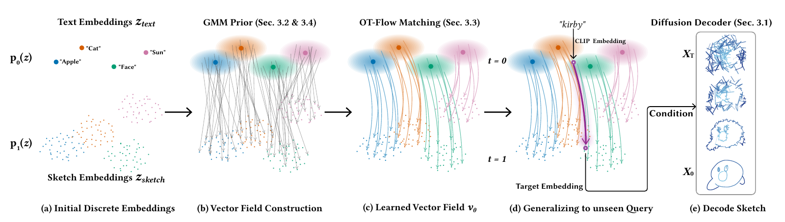

Abstract
Vector sketches are a concise medium for abstract human expression, yet high-quality text-to-sketch pairs are scarce. SketchFlow formulates cross-modal alignment as a continuous mapping problem in CLIP latent space. It expands discrete category text embeddings into a continuous Gaussian Mixture Model prior, then learns an Optimal Transport Conditional Flow Matching vector field that transports this prior to the rendered-sketch feature distribution. A hybrid diffusion decoder combining a 1D U-Net and Transformer decodes the transported features into vector stroke trajectories. Trained from category-only QuickDraw sketches, SketchFlow supports fast local zero-shot synthesis for concepts and semantic modifiers beyond the QuickDraw training vocabulary, together with continuous concept interpolation.
Method

01
Continuous GMM Prior
Noise around category text embeddings expands isolated semantic anchors into a continuous source distribution.
02
OT-CFM Transport
A learned vector field transports the GMM prior toward the rendered-sketch manifold in CLIP space.
03
Vector Decoding
A hybrid 1D U-Net and Transformer diffusion decoder generates ordered 256-point stroke trajectories.
Zero-Shot Results Beyond the Training Vocabulary

Letters, numbers, Malaysian landmarks, characters, emotions, and dynamic poses.

Distinctive concepts outside the 345-category training taxonomy.
The GMM prior flow bridges discrete text anchors and continuous sketch features.
Drawing Process
Each animation follows the generated vector trajectory from its first point to the completed sketch.
SIGGRAPH
8 generated trajectoriesASIA 2026
8 generated trajectoriesMalaysia Landmarks
6 generated trajectoriesScope and Limitations
SketchFlow is trained from the 345 discrete QuickDraw categories. It is not a general image model and does not reliably parse long, compositional prompts. Its strongest zero-shot behavior appears on concise, visually distinctive concepts that CLIP represents clearly, such as Kirby, Mickey, ghosts, rockets, emotions, symbols, and landmarks. Generation remains stochastic, so sampling multiple candidates can be useful.
BibTeX
@inproceedings{zhou2026sketchflow,
title = {SketchFlow: Zero-Shot Vector Sketch Generation
via GMM Prior Flow in CLIP Latent Space},
author = {Zhou, Jin and Yang, Hongliang and
Xu, Pengfei and Huang, Hui},
booktitle = {ACM SIGGRAPH Asia 2026 Conference Papers},
year = {2026},
doi = {10.1145/3829340.3842307},
eprint = {2608.21659},
archivePrefix = {arXiv},
primaryClass = {cs.CV}
}